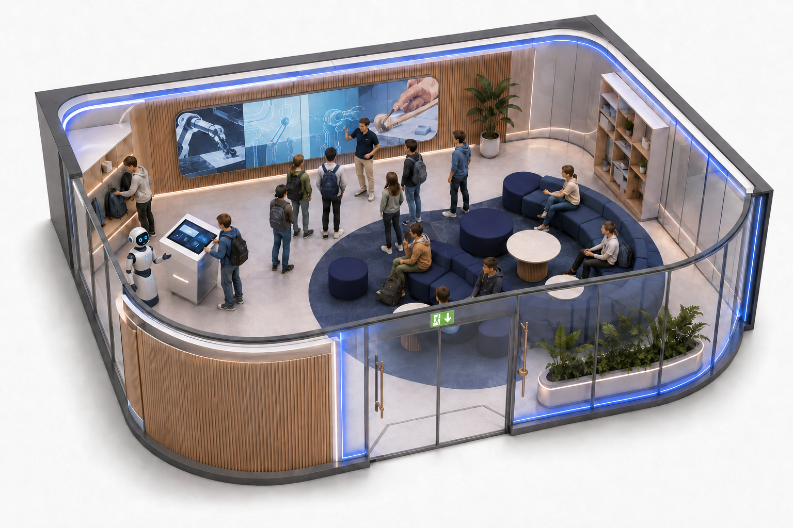
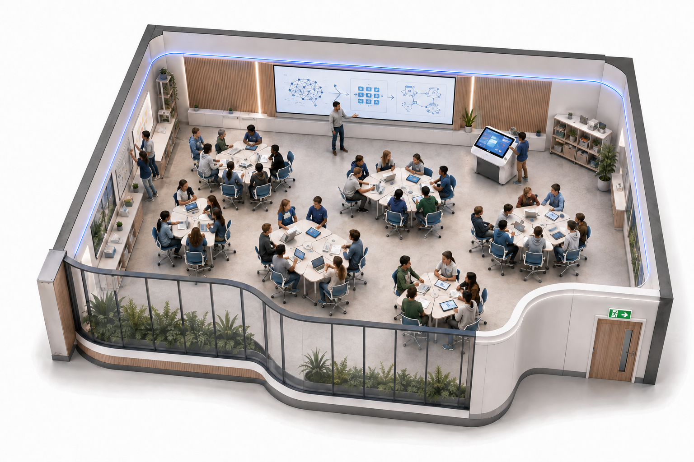
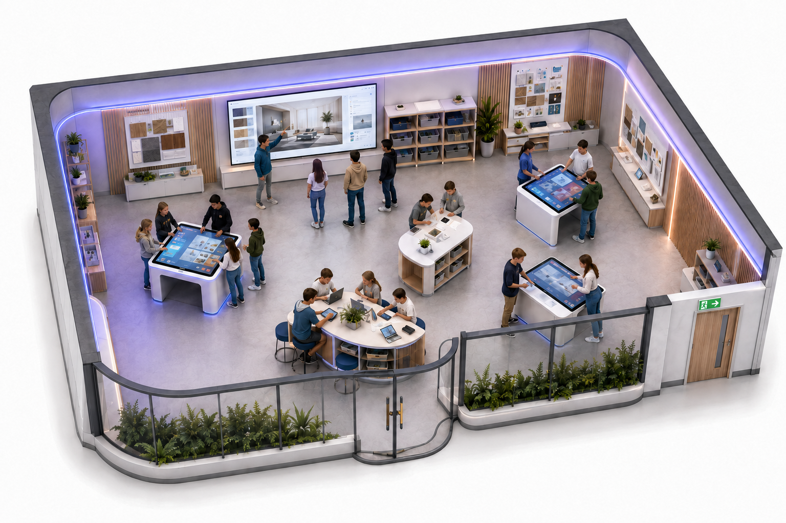
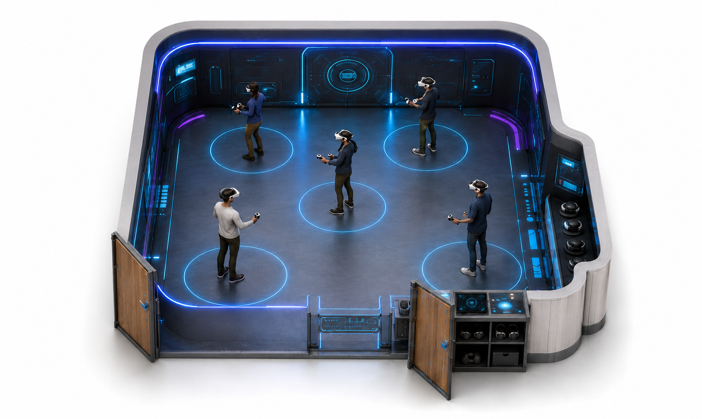
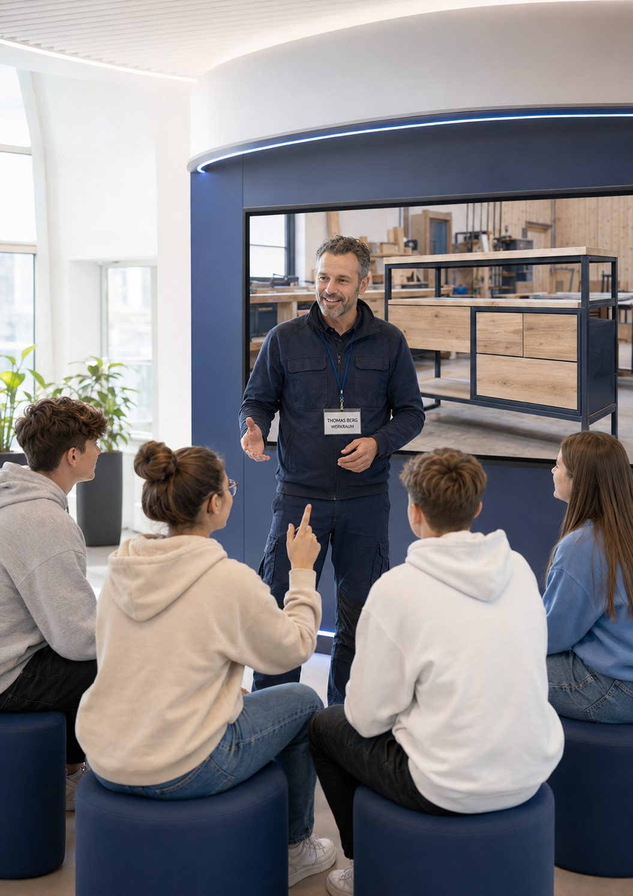
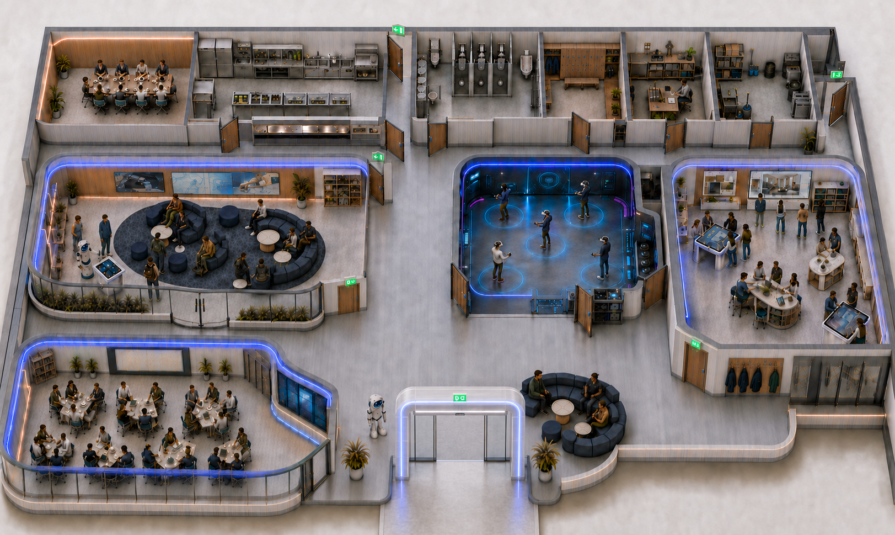

Erleben
Moderne Berufswelten und Technologien kennenlernen.
Berufsorientierung neu gedacht: digital, erlebnisorientiert und mit konkreten Wegen in Ausbildung.
„KI trifft das Handwerk“ bringt junge Menschen mit modernen Berufswelten zusammen. Sie entdecken Interessen, Fähigkeiten und berufliche Perspektiven – bevor die Entscheidung für einen Ausbildungsweg gefallen ist.
Künstliche Intelligenz, Digitalisierung und neue Assistenzsysteme verändern Handwerk, Industrie und praktische Berufe.
Doch viele junge Menschen kennen diese Berufswelten noch mit Bildern von gestern.
KI trifft das Handwerk zeigt, wie moderne Arbeit heute und morgen aussieht.
Die Berufe bleiben.
Die Werkzeuge verändern sich.

KTDH ist eine neue Bildungs- und Übergangsinfrastruktur für junge Menschen.
In einer modernen, digital geprägten Lern- und Erlebnisumgebung können Jugendliche Berufswelten kennenlernen, Zukunftstechnologien erleben und eigene Interessen und Fähigkeiten entdecken.
Technologie ist das Werkzeug, mit dem Berufe verständlicher, moderner und erlebbarer werden.
KTDH schafft den Einstieg. Unternehmen, Kammern, Innungen, Berufskollegs, Bildungszentren und weitere Partner ermöglichen anschließend Vertiefung und konkrete Wege in Ausbildung.
Moderne Berufswelten und Technologien kennenlernen.
Eigene Interessen, Fähigkeiten und Stärken erkennen.
Berufe und berufliche Möglichkeiten besser verstehen.
Bei Partnern vertiefende Einblicke und Erfahrungen sammeln.
Aus Interesse wird eine konkrete berufliche Perspektive.
Der Erlebnisort ist nicht das Ziel. Er ist der Ausgangspunkt.
Der geplante Pilotstandort verbindet vier eigenständige Erlebnisräume mit unterschiedlichen Perspektiven auf Beruf, Technologie und Arbeitswelt.

Wie verändern digitale Werkzeuge und KI unterschiedliche Berufe?

Was interessiert mich? Was fällt mir leicht? Wo liegen meine Stärken?

Wie arbeiten Menschen heute – und wie verändert Technologie ihre Aufgaben?
Welche nächsten Schritte, Partner und Ausbildungsangebote passen zu mir?
Finde heraus, was zu dir passt. Entdecke Berufe, Technologien und Arbeitswelten – ohne dich sofort entscheiden zu müssen.
Ausbildung und Zukunftstechnologie gehören zusammen. KTDH macht berufliche Perspektiven sichtbar.
Berufsorientierung wird zum Erlebnis und verbindet Berufsbilder, MINT-Themen und moderne Technologien.

Nachwuchs erreichen, bevor Entscheidungen gefallen sind.
machen Ausbildungswege und Berufsperspektiven sichtbar.
verbinden Orientierung mit vorhandenen Strukturen.
übernehmen Vertiefung und praktische Erprobung.
bringen moderne Technologien in einen sinnvollen Bildungskontext.
stärken Bildungsinnovation und regionale Fachkräftesicherung.
Regional starten. Übertragbar denken.
Der erste zentrale Pilotstandort ist im Kreis Mettmann vorgesehen und wird mit maximal 500 m² Bruttogrundfläche geplant.
Hier soll ein regionales Modell entstehen, das Schule, Berufsorientierung, Unternehmen und bestehende Ausbildungsstrukturen besser miteinander verbindet.

„KI trifft das Handwerk schafft keine Ausbildungswelt neben dem Handwerk. Es schafft einen neuen Zugang in das Handwerk.“
Gesucht werden Partner aus Handwerk, Industrie, Schulen, Kammern, Innungen, beruflicher Bildung, Kommunen und Technologie.
Initiiert und entwickelt von Glanz Unternehmensberatung.